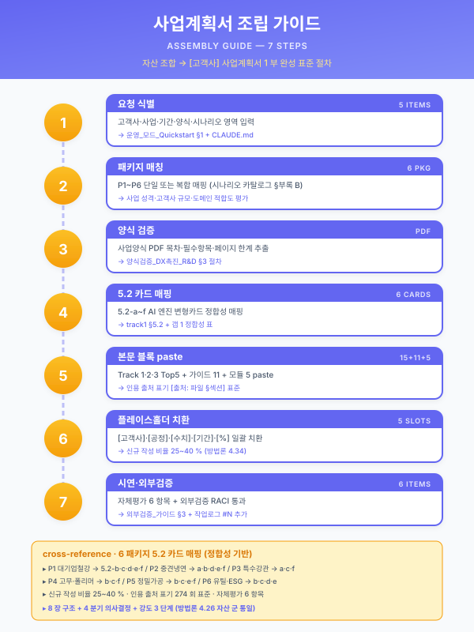

사업계획서 조립 가이드¤
📖 약 18 분 읽기

ℹ️ 페이지 정보 (워크스페이스 메타)
통합 파일럿(pkg/pkg2-cold-rolled.md) 의 자체평가 결과 — §5.2 카드 매핑 부재(갭 1) 와 공통 자산의 SCN ID 부정합 처리 표준 부재(갭 3) — 를 표준화한 워크스페이스 운영 가이드이다. 본 문서는 워크스페이스 자산을 조합하여 사업계획서를 조립할 때마다 1 차 참조 권위 문서로 작동하며, 향후 패키지 1·3·4·5·6 의 신규 사업계획서 조립 시에도 동일하게 적용된다.
플레이스홀더 범례 —
[고객사]고객사명,[공정]대상 공정명,[수치]수치,[기간]기간,[%]비율.선행 문서:
meta/claude-md.md(작업 규약·플레이스홀더 관례),track/track1-index.md(Track 1 골격),track/track1-engine-cards.md(5.2-a~f 카드),track/track1-top5.md(BLK-T1-3.1·3.2·4.4·4.5·4.6),scenario/catalog.md(부록 B 패키지 1~6),scenario/detail-top5.md, 모듈 3 종 (CBAM·중대재해·연합학습),other/support-programs.md,meta/review-report.md.
1. 조립 절차 (7 단계)¤
본 절차는 워크스페이스 자산을 조합하여 단일 사업계획서 1 부를 완성하기까지의 표준 흐름을 7 단계로 분해한 것이다. 각 단계에는 의 패키지 2 파일럿 또는 그 이전 Phase 의 사례를 참조 인용하여 실제 적용 양상을 보인다.
- 패키지 결정 —
scenario/catalog.md부록 B 의 패키지 1~6 중 [고객사] 의 업종·규모·데이터 성숙도·지원사업 트랙에 맞는 1 개 패키지를 선택하고, 그 시나리오 군을 본 사업의 시나리오 범위로 확정한다. 복합 패키지(예: 패키지 2 + 패키지 6 일부) 도 허용되나, 그 경우 본 가이드 §3 의 SCN 부정합 처리 정책을 우선 적용한다.
[ 사례] 패키지 2 (중견 스테인리스 냉연) 가 선택되었으며, 시나리오 군은 STL-04·05·06·09 + MLO-03 + LLM-02 의 6 종으로 확정되었다. 지원사업은 제조AI특화 스마트공장이 매칭되었다.
- 5.2 카드 매핑 — 본 가이드 §2 의 패키지별 필수 인용 5.2 카드 매핑 표에 따라, §5.2 절에 본문 인용해야 할 5.2-a ~ 5.2-f 카드 군을 확정한다. 누락된 카드가 있을 경우 패키지의 핵심 가치 입증력이 약화되므로 본 단계가 후속 모든 단계의 정합성 기반이 된다.
[ 사례] 패키지 2 파일럿은 §5.2 에 4 카드(a·b·d·f) 만 인용하고 5.2-e 를 누락하여 자체평가 갭 1 로 식별되었다. 본 가이드의 1 차 적용 결과로 5 카드(a·b·d·e·f) 인용 구조로 교정한다(§9 후속 패치 권고 참조).
- 본문 자산 인용 —
track/track1-index.md의 §1·2·3·4·5·6 카드,track/track1-top5.md의 BLK-T1-3.1·3.2·4.4·4.5·4.6 5 블록을 본 사업계획서 §3·§4 절에 인용한다. 인용 시점은 본 가이드 §3 의 SCN 부정합 처리 정책을 동시에 적용하여, 인용 본문 내의 SCN ID 가 본 사업 범위와 정합한지 점검한다.
[ 사례] 패키지 2 파일럿은 BLK-T1-3.1·3.2·4.4·4.5·4.6 의 5 블록을 모두 인용하였으며, 본문의 ID 정합성은 §3.1·3.2·4.5 등 3 지점에서 부분 부정합이 발견되어 자체평가 갭 3 으로 식별되었다.
- 모듈 삽입 —
module/cbam.md,module/safety.md,module/federated-learning.md중 본 사업의 성격에 부합하는 모듈을 본 가이드 §5 의 표준 삽입 지점에 따라 본문에 결합한다. 모듈 삽입은 본 사업의 차별화 포인트를 강화하는 보조 자산이며, 본 사업의 주력 시나리오와 직접 결합되지 않는 모듈은 별첨에 위임한다.
[ 사례] 패키지 2 파일럿은 중대재해 모듈을 §1.2·3.4·6.2 에 부분 결합하고, CBAM 모듈을 §6.2 에 선택적 인용하였으며, 연합학습 모듈은 §6.4 후속 로드맵에서 1 문단 인용으로 처리되었다.
- 신규 작성 섹션 채움 — 본 가이드 §6 의 신규 작성 섹션 목록에 따라 [고객사] 의 실제 도메인·데이터·시스템 환경을 반영한 새 섹션을 채운다. 신규 작성 분량은 전체 본문의 25~35 % 비율을 목표로 하며, 그 이상은 인용 자산의 활용도 저하, 그 이하는 [고객사] 특화 정합성 부족을 의미한다.
[ 사례] 패키지 2 파일럿의 신규 작성 비율은 30 % 로 산정되어 목표 범위에 정확히 부합하였다.
- 인용 출처 표기 — 모든 본문 섹션 말미에
> [출처: 파일명 §섹션 또는 BLK-XXX-X]형식으로 인용 출처를 표기하며, 부분 발췌 인용은 출처 + "발췌·요약" 명시를 함께 둔다. 본 가이드 §4 인용 출처 표기 규약을 표준 권위로 적용한다.
[ 사례] 패키지 2 파일럿은 모든 본문 섹션 말미에 일관된 출처 표기를 두었으며, 인용 출처 표기 일관성은 일관성 점수 5/5 를 받았다.
- 자체평가 — 조립 산출물 말미에
## 통합 자체평가섹션을 두고, 본 가이드 §8 의 양식에 따라 (i) 자산 활용도 (ii) 갭 발견 (iii) 자연스럽지 않은 인용 (iv) 신규 섹션 평가 (v) 신규 분량 비율 (vi) 일관성 점수 의 6 항목을 보고한다. 자체평가는 차회 사업계획서 조립 시 본 가이드의 갱신 입력이 된다.
[ 사례] 패키지 2 파일럿은 6 항목 자체평가를 200 줄 분량으로 작성하였으며, 본 가이드는 그 결과를 직접 반영하여 신설된 자산이다.
2. 패키지별 필수 인용 5.2 카드 매핑 표¤
scenario/catalog.md 부록 B 의 6 패키지 각각에 대해 어느 5.2 카드(5.2-a~f) 를 §5.2 절에 본문 인용해야 하는지를 매핑한다. 매핑 근거는 패키지의 시나리오 → 시나리오의 5.2 엔진 패턴 (track/track1-engine-cards.md 매트릭스 L14~25) → §5.2 절의 본문 추적 가능성의 3 단 연계이다.
| 패키지 | 시나리오 군 | §5.2 본문 인용 필수 5.2 카드 | 비고 |
|---|---|---|---|
| 1. 대기업 철강 전사 AI | STL-01·03·09·10 + UTL-01 + MLO-01/02 + LLM-02 + SAF-02 | 5.2-b · 5.2-c · 5.2-d · 5.2-e · 5.2-f (5 카드 전부) | Track 2 MLOps 별첨 결합. SAF-02 는 CBAM 모듈에 위임. |
| 2. 중견 스테인리스 냉연 | STL-04·05·06·09 + MLO-03 + LLM-02 | 5.2-a · 5.2-b · 5.2-d · 5.2-e · 5.2-f | 파일럿이 5.2-e 누락 → 본 가이드의 1 차 교정 대상 (§9 참조). |
| 3. 중견 특수강관 암묵지 | STL-07·08·11 + LLM-01 | 5.2-a · 5.2-c · 5.2-f | STL-07 은 5.2-a + 5.2-f 병기. STL-11 의 비전 파트는 5.2-c. |
| 4. 고무 양산 압출 품질 | RUB-01·02·05 + LLM-03 + MLO-01 | 5.2-b · 5.2-c · 5.2-f | RUB-02 는 5.2-b + 5.2-c 병기. LLM-03 보고서 자동 작성은 5.2-f. |
| 5. 정밀가공 중소 SaaS | MET-01·03 + UTL-01 + LLM-01·04 + SAF-01 | 5.2-b · 5.2-c · 5.2-e · 5.2-f | MET-01 공구 마모는 5.2-b 시계열 + 일부 5.2-d 예지보전 결합 가능. |
| 6. 유틸 ESG 특화 | UTL-01·02·03 + SAF-01·02 | 5.2-b · 5.2-c · 5.2-d · 5.2-e | UTL-02 누기 탐지가 5.2-d, UTL-03 환경 예측이 5.2-b. SAF-02 는 CBAM 모듈로 위임. RAG 가 부재한 패키지이므로 5.2-f 는 옵션. |
매핑 운영 원칙¤
- 카드 병기 의무: 단일 시나리오가 복수 카드에 매핑되는 경우 (예: STL-04 → 5.2-a + 5.2-e), 본문에서는 해당 시나리오의 절(예: §5.2-a 카드 본문) 말미에 "본 시나리오는 5.2-e 의 공정 최적화 패턴과도 결합되며, 결합 양상은 §5.2-e 카드 말미의 결합 가이드 1 문단을 참조한다" 형태로 명시한다.
- 결합 가이드 첨부 의무: 카드 2 장 이상 인용 시, §5.2 절 말미에 "엔진 간 데이터·피드백 공유 지점" 1 문단을 의무적으로 첨부한다 (
track/track1-engine-cards.mdL 248~255 결합 가이드 참조). - 누락 카드 사후 점검: 조립 마지막 단계에서 본 표의 매핑과 실제 본문 인용 카드를 대조하여, 누락된 카드가 있는 경우 보강 인용한다. 의 5.2-e 누락이 이 점검의 1 차 적용 사례이다.
3. SCN ID 부정합 처리 정책¤
3.1 문제 정의¤
track/track1-top5.md 의 BLK-T1-3.1·3.2·4.4·4.5·4.6 5 블록 본문 (§3.1·3.2·4.4·4.5·4.6 인용 시점) 은 카탈로그의 임의 SCN 시나리오를 예시로 인용한다. 그러나 본 사업의 시나리오 군은 패키지에 따라 한정되어 있어, 인용된 SCN 이 본 사업 범위 밖일 경우 심사자에게 사업 범위의 모호성을 야기한다. 이러한 부정합은 통합 파일럿의 자체평가 갭 3 으로 식별되었으며, 인용 본문을 그대로 두는 경우 미세한 부정합이, 본 사업 시나리오로 교체하는 경우 인용성 자체의 약화가 발생하는 트레이드오프 구조이다.
3.2 정책 — 사업 범위와 인용 SCN 의 관계에 따른 3 분기¤
| 관계 | 처리 방식 | 적용 예 |
|---|---|---|
| 인용 SCN ∈ 본 사업 범위 | 그대로 유지 | 패키지 2 본문에 STL-09 인용 → 본 사업의 주력 시나리오와 일치하므로 그대로 유지. |
| 인용 SCN ∈ 카탈로그, ∉ 본 사업 범위 | 사업 성격에 따라 (a)·(b)·© 중 1 개 분기 | 패키지 2 본문 §3.1 의 STL-07 인용은 본 사업 범위 밖. 처리 분기 선택 후 적용. |
| 인용 SCN ∉ 카탈로그 (가공·창작 SCN) | 즉시 카탈로그 등록 절차 후 인용; 미등록 상태로는 인용 금지 | (창작 SCN 발견 시) 즉시 작성자에게 회송. |
3.3 정책 분기 (a)·(b)·© — 사업 범위 외 SCN 인용의 3 가지 처리¤
- (a) 각주 처리 — 인용 본문은 그대로 두고, "본 인용에 포함된 SCN-XXX-XX 는 카탈로그의 일반 사례 참조이며, 본 사업의 시나리오 범위 밖이다" 의 1 문장 각주를 본문 직후에 부가한다. 인용성을 유지하면서도 심사자에게 명시적 신호를 준다.
- (b) 본 사업 시나리오로 치환 — 인용 본문 내의 SCN ID 를 본 사업 시나리오 군의 가장 가까운 시나리오로 교체한다. 인용성은 유지되나 원문 정확도가 미세하게 손상되므로, 출처 표기에 "발췌·재정렬" 을 명시한다. 파일럿의 §3.1 STL-07 인용을 STL-04 로 치환하는 경우가 대표 예이다.
- © 별첨에 위임 — 본 사업의 1 차 범위가 아닌 SCN 군이 다수 등장하는 인용 블록은 본문 인용을 생략하고, 별첨 또는 후속 로드맵 섹션에서 "본 사업의 후속 단계로 SCN-XXX-XX 의 적용을 검토한다" 형태로 위임한다. 파일럿의 §6.4 LLM-01 후속 위치 처리가 이 분기의 적용 사례이다.
3.4 분기 선택 기준 — 의사결정 흐름¤

3.5 점검 절차 — 조립 마지막 단계의 grep 점검¤
조립 마지막 단계에서 본문 내 모든 SCN ID 인용을 grep 으로 추출하여 본 사업 범위와 대조한다. 점검 절차는 다음과 같다.
grep -oE 'SCN-[A-Z]{3}-[0-9]+' [본문파일]로 본문 내 SCN ID 전체 목록을 추출한다.- 추출된 ID 를 본 사업 시나리오 군과 대조하여 사업 범위 외 ID 를 식별한다.
- 사업 범위 외 ID 가 [수치] 건 (실무 권장 기준 5 건 이상) 인 경우, (b) 치환을 우선 권장한다. 그 미만이면 (a) 각주 처리로 단순화한다.
- 모든 사업 범위 외 ID 에 대해 §3.3 의 분기 (a)·(b)·© 중 1 개를 결정하고, 결정 결과를 자체평가 섹션의 "3. 자연스럽지 않은 인용" 항목에 보고한다.
4. 인용 출처 표기 규약¤
본 워크스페이스의 모든 자산 간 인용은 다음 표기 규약을 준수한다. 본 규약은 단계에서 수립된 표기 관례를 표준화한 것이다.
- 섹션 말미 출처 표기 — 본문 섹션 말미에 한 줄 인용 블록을 두고, 다음 형식으로 출처를 명시한다.
> [출처: track/track1-index.md §3.1]> [출처: track/track1-top5.md BLK-T1-3.1]> [출처: scenario/catalog.md 부록 B 패키지 2 추천 근거]- 단락 인용 마커 — 인용 본문 자체는 인용블록 마커
>로 시작하여 마지막 줄까지 일관 적용한다. 단락 인용이 길어 인용블록이 중첩되는 경우, 인용블록 외부에 출처 표기를 둔다. - 부분 인용 표기 — 인용 본문이 원문의 부분 발췌·요약인 경우, 출처 표기에 "발췌" 또는 "발췌·요약" 을 명시한다.
> [출처: track/track2-index.md §3 발췌]> [출처: module/cbam.md BLK-CBAM-E 발췌·요약]- 블록 ID 우선 —
track/track1-top5.md와 모듈 3 종은 BLK-XXX-X 형식의 블록 ID 를 부여하고 있으므로, 출처 표기에는 §섹션 번호 대신 BLK-XXX-X 를 우선 사용한다.
5. 모듈 삽입 표준 지점¤
3 종 모듈(CBAM·중대재해·연합학습) 은 각 모듈 파일 자체에 § 삽입 지점 맵 표가 권위 출처로 존재한다. 본 가이드는 각 모듈의 삽입 지점을 요약 인덱싱하며, 상세는 각 모듈 파일 내부의 삽입 지점 맵 표를 참조한다.
| 모듈 | 본문 삽입 지점 (Track 1 기준) | Track 2·3 결합 | 별첨 결합 |
|---|---|---|---|
CBAM 대응 (module/cbam.md) |
§1.2 거시 환경 · §1.4 [고객사] 현황 · §4.3 데이터 유형 · §5.x AI 엔진 · §6.2 정성 효과 · §7.2 별첨 위임 | Track 3 RAG (규제 문서) 결합 | EU 수출 비중 [%] 이 핵심 임계 |
중대재해·안전 (module/safety.md) |
§1.2 거시 환경 · §1.3 산업 당위성 · §3.4 안전 리스크 · §4.1·4.2·4.3 (안전 시나리오 결합) · §6.2 정성 효과 | Track 3 RAG (사고 이력) 결합 | 안전 시나리오 비중에 따라 본문 통합 또는 별첨 분리 |
연합학습·산단 공동 (module/federated-learning.md) |
§1.2 거시 환경 · §1.4 [고객사] 현황 · §4.x 데이터 전략 · §5.x AI 엔진 · §6.2·6.4 정성·로드맵 | Track 2 MLOps (분산 학습) 결합 | 1 차 사업 단일 공장이면 §6.4 비전 1 문단 인용으로 한정 |
모듈 삽입 운영 원칙¤
- 모듈 삽입 시 본 모듈 파일의 § 삽입 지점 맵 표를 권위 출처로 사용하며, 본 가이드는 그 인덱스 역할에 머문다.
- 모듈 1 종의 본문 통합 분량은 본 사업 본문 전체의 [%] 를 초과하지 않도록 한다 (실무 권장 10~15 %). 그 이상이면 별첨 위임 검토.
- 모듈 결합 시 본 사업의 주력 시나리오와의 데이터·인프라 공유 지점 1 문단을 의무적으로 첨부한다.
6. 신규 작성 섹션 (조립 시 매번 새로 작성)¤
다음 섹션은 [고객사] 별·사업별로 매번 새로 작성하며, 워크스페이스 자산을 인용하지 않는다. 이는 신규 작성 분량 비율 25~35 % 의 핵심 구성이다.
| 섹션 | 작성 내용 | 권장 분량 |
|---|---|---|
| §0 과제 요약 (1 페이지 표) | 사업명·도입기업·대상 공정·주요 시나리오·핵심 KPI·총 사업비·기간·지원사업 매칭 | 50 줄 |
| §1.4 [고객사] 현황·핵심 문제의식 | [고객사] 의 도메인 특성·연혁·구조적 문제의식 4 개 + 1 줄 명제문 | 30~40 줄 |
| §2.1 도입기업 개요·재무 | 표 형식 (대표자·자본금·매출·종업원·주력 제품·인증) | 25~30 줄 |
| §2.2 대상 공정 (업종별) | [공정] 의 도메인 흐름·물성·설비·KPI | 40~50 줄 |
| §2.3 ICS·MES 구축 이력 | 연도별 마일스톤 표 + 단계 명료 | 25~35 줄 |
| §2.4 데이터 보유 현황 | 데이터 카테고리 × 시나리오 매트릭스 | 35~45 줄 |
| §5.4 기존 시스템 연동 | [고객사] 의 OT/IT 환경·연동 원칙·통합 도식 | 50~60 줄 |
| §5.5 일정·마일스톤 | Mermaid Gantt + 마일스톤 표 + 검수 기준 | 50~60 줄 |
| §6.1 정량 효과 | 시나리오 × 다중 KPI 통합 표 (수치 채움) | 30~40 줄 |
| §6.4 중장기 로드맵 | 5 단계 흐름 + 산단 공동 비전 1 문단 | 30~40 줄 |
신규 작성 분량 비율 목표¤
전체 본문 대비 25~35 % ( 패키지 2 파일럿 사례 30 %). - 25 % 미만 — [고객사] 특화 정합성 부족. §1.4·§2.1~2.4 분량 보강. - 35 % 초과 — 인용 자산의 활용도 저하. §3·§4·§5.1~5.3 인용 비중 증가.
7. 플레이스홀더 치환 체크리스트¤
조립 마지막 단계에서 본문 전체에 대해 다음 grep 점검을 수행한다. 미치환 플레이스홀더가 1 건이라도 존재하면 제출 가능 상태가 아니다.
| 플레이스홀더 | grep 패턴 | 치환 기준 |
|---|---|---|
[고객사] |
\[고객사\] |
모두 실 회사명으로 치환 |
[공정] |
\[공정\] |
모두 실 공정명으로 치환 |
[수치] |
\[수치\] |
사업 실 수치로 치환 (단, 보안·기밀로 미공개 부분은 "비공개" 명시) |
[기간] |
\[기간\] |
사업 실 기간 또는 추정 범위로 치환 |
[%] |
\[%\] |
사업 실 비율 또는 추정 범위로 치환 |
점검 절차¤
grep -nE '\[(고객사|공정|수치|기간|%)\]' [본문파일]로 미치환 플레이스홀더 전체 목록을 추출한다.- 추출 결과가 0 건이면 제출 가능 상태로 판정한다.
- 1 건 이상이면 각 항목을 점검하여 치환·"비공개" 표기·삭제 중 1 개 처리를 결정한다.
- 가상 [고객사] 시나리오 또는 워크스페이스 보존용 모듈 산출물의 경우, 플레이스홀더를 그대로 유지하되 본 점검을 생략하지 않고 보고한다.
8. 자체평가 섹션 양식¤
조립 산출물 말미에 ## 통합 자체평가 섹션을 두고, 다음 6 항목을 보고한다. 본 양식은 패키지 2 파일럿의 자체평가 섹션 (pkg/pkg2-cold-rolled.md L 1028~1140) 을 표준화한 것이다.
1. 자산 활용도 체크리스트¤
워크스페이스 자산 14 종 (또는 그 시점 자산 전체) 의 활용 여부·활용 위치 표. 활용률 [%] 산정.
2. 갭 발견 (Top N)¤
조립 중 자산이 부족하다고 느낀 지점을 N 개 항목으로 정리한다. 각 항목은 (i) 갭의 정의 (ii) 본 사업에 미친 영향 (iii) 향후 보강 권고 의 3 단으로 기술한다.
3. 자연스럽지 않은 인용 (Top N)¤
§3 의 SCN 부정합 처리 정책 적용 결과 보고. 각 항목은 (i) 부정합 인용의 위치 (ii) 분기 (a)·(b)·© 중 적용한 처리 (iii) 적용 결과의 평가 의 3 단으로 기술한다.
4. 신규 작성 섹션 평가¤
§6 의 신규 작성 섹션 별 (i) 작성 분량 (ii) 평가 1~5 점 (iii) 비고 의 3 단 표.
5. 신규 작성 분량 비율¤
전체 본문 대비 신규 작성 분량 비율 [%] 산정. 목표 25~35 % 부합 여부 보고.
6. 전체 일관성 자기평가 (1~5 점)¤
(i) 톤 통일 (ii) 플레이스홀더 일관성 (iii) 인용 출처 표기 (iv) 시나리오 ID 정합성 (v) 트랙 매핑 일관성 (vi) 분량 균형 (vii) 가독성·구조 의 7 항목 1~5 점 평가 표 + 종합 점수 [점] / 5.
9. 패키지 2 파일럿 후속 패치 권고¤
본 가이드는 통합 파일럿(pkg/pkg2-cold-rolled.md) 의 자체평가 결과를 1 차 적용 대상으로 한다. 패키지 2 파일럿에 적용해야 할 후속 패치 항목은 다음과 같다.
9.1 §5.2 — 5.2-e 카드 본문 인용 추가 (1 차 교정 대상)¤
현황: §5.2 절이 4 카드 (5.2-a · 5.2-b · 5.2-d · 5.2-f) 만 인용하고 5.2-e (공정 최적화·제어 엔진) 를 누락. 본 사업의 SCN-STL-06 소둔 적재·온도 프로파일 최적화는 5.2-e 의 직접 적용 사례임에도 별도 카드 섹션으로 등장하지 못함.
처리: §5.2 절을 5 카드 인용 구조로 확장. 새 카드 섹션 "5.2-e 공정 최적화·제어 엔진 (SCN-STL-06 소둔 적재·온도 프로파일)" 을 §5.2-d 직후에 신설하며, track/track1-engine-cards.md §5.2-e (L 172~204) 의 본문을 인용한다. 카드 말미에 STL-06 적용 1 문단 ([고객사] 의 BAF/APL 적재 최적화 양상) 을 부가한다.
근거: 본 가이드 §2 의 패키지 2 매핑 표 (5.2-a·5.2-b·5.2-d·5.2-e·5.2-f) 와 정합.
9.2 §6.1 — 시너지 ROI 모델 (G2 산출) 행 신설¤
현황: §6.1 정량 효과 표는 6 시나리오의 개별 KPI 만 제시하고, 시너지의 정량 효과는 §5.2 결합 가이드 1 문단의 정성 서술에 머무름. 자체평가의 가장 큰 이슈 2 의 핵심. 처리: §6.1 표 말미에 "시나리오 결합 시너지 ROI" 행을 신설하고, 별도 에이전트 G2 가 산출하는 시너지 ROI 모델의 결과를 인용한다. 산출 결과가 본 가이드 작성 시점에 부재하므로 처리 시점은 G2 산출 완료 후로 위임한다.
9.3 §3.1 — STL-07 인용의 (b) STL-04 로 치환¤
현황: §3.1 본문이 BLK-T1-3.1 (track/track1-top5.md) 인용 끝부분에 "SCN-STL-07 인발·필거밀 공정설계 LLM, SCN-MET-05 단조·절단·절곡 설정 추천 등 참조" 표현을 그대로 유지. 본 사업 시나리오 군 (STL-04·05·06·09 + MLO-03 + LLM-02) 과 부정합. 처리: 본 가이드 §3.3 의 분기 (b) 본 사업 시나리오로 치환을 적용. 인용 본문 내의 STL-07 → STL-04, MET-05 → STL-04 로 치환하되, 출처 표기에 "발췌·재정렬" 을 명시한다. 인용성은 미세하게 손상되나 사업 범위 정합성이 우선이다.
9.4 §3.2 — LLM-01·LLM-04 인용의 © §6.4 후속 로드맵 위임¤
현황: §3.2 본문이 BLK-T1-3.2 인용 끝부분에 "SCN-LLM-01 SOP RAG, SCN-LLM-04 도면 RAG" 를 해결책으로 참조하나, 본 사업의 RAG 시나리오는 LLM-02 한정. 처리: 본 가이드 §3.3 의 분기 © 별첨·후속 로드맵 위임을 적용. 인용 본문은 유지하되, 직후에 "단, LLM-01 SOP RAG·LLM-04 도면 RAG 는 본 사업의 1 차 범위 밖이며 §6.4 후속 로드맵의 단계 [수치] 에 위치한다" 1 문장을 부가한다. §6.4 의 후속 로드맵 섹션에 LLM-01·04 의 후속 적용 1 문단을 명시 추가한다.
9.5 §4.5 — STL-08·STL-07 인용의 (a) 각주 처리¤
현황: §4.5 본문이 BLK-T1-4.5 인용 끝부분에 "SCN-STL-08 밀시트 OCR, SCN-STL-07 공정설계 LLM" 을 5.2-a·5.2-f 적용 사례로 언급. 본 사업 시나리오 군과 직접 매칭되지 않으나 모델 선정 거버넌스의 일반 사례로 인용 가능 수준. 처리: 본 가이드 §3.3 의 분기 (a) 각주 처리를 적용. 인용 본문 직후에 "본 인용에 포함된 SCN-STL-08·STL-07 은 모델 선정 거버넌스의 일반 사례 참조이며, 본 사업의 시나리오 범위 밖이다" 의 1 문장 각주를 부가한다.
9.6 자체평가 갭 항목 갱신¤
현황: 패키지 2 파일럿의 §통합 테스트 자체평가 (L 1028~1140) 의 갭 1 (5.2-e 누락) 과 갭 3 (시너지 정량화 부재) 의 일부, 가장 큰 이슈 1 (SCN 부정합 처리 표준 부재) 이 본 가이드 작성으로 해소됨.
처리: 패키지 2 파일럿의 자체평가 섹션에 "본 갭은 guide/assembly.md §2 (5.2 카드 매핑 표) · §3 (SCN 부정합 처리 정책) · §9 (후속 패치 권고) 에서 표준화·교정됨" 1 문장을 각 갭 항목에 부가한다.
10. 본 가이드 갱신 규약¤
- 갱신 시점: 신규 사업계획서 조립 완료 후, 자체평가 결과의 갭 항목이 본 가이드의 추가·갱신 대상에 해당하는 경우 본 가이드를 즉시 갱신한다.
- 갱신 범위: §2 카드 매핑 표 (신규 패키지 추가 시), §3 부정합 처리 정책 (신규 분기 발견 시), §5 모듈 삽입 표준 (신규 모듈 추가 시), §6 신규 작성 섹션 목록 (신규 섹션 발견 시), §9 후속 패치 권고 (신규 파일럿 결과).
- 갱신 책임: 조립 작업자가 1 차 갱신 초안을 작성하고, 본 워크스페이스의 검토자가 승인한다.
- 갱신 이력: 본 가이드 말미에 "갱신 이력" 표를 두고 갱신 일자·작성자·갱신 항목을 기록한다.
갱신 이력¤
| 일자 | 작성자 | 갱신 항목 |
|---|---|---|
| 2026-04-24 | 초안 작성 — 자체평가 결과 (5.2 카드 매핑 부재 · SCN 부정합 처리 표준 부재) 의 표준화 |
[본 문서 출처: 통합 파일럿 자체평가 (
pkg/pkg2-cold-rolled.md§통합 테스트 자체평가) · 시나리오 카탈로그 부록 B · 5.2 변형 카드 매트릭스 · 검토리포트 2026-04-24]
📌 이 페이지 정보 (개발자용)
- 원본 파일:
사업계획서_조립_가이드.md - 자산 군: 📋 운영 가이드
- slug 경로:
guide/assembly.md - 워크스페이스 정책: 원본 .md 수정 0 — hooks 로만 시각 변환
- 자산 자족성 정상화: Phase E7 완료 (잔여 외부 갭 4)